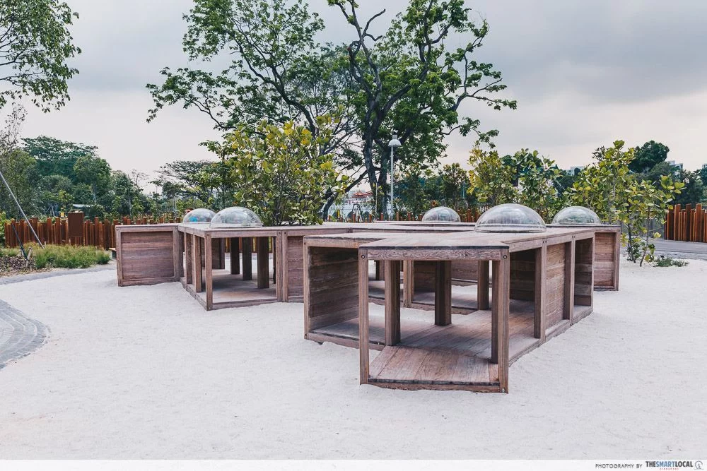
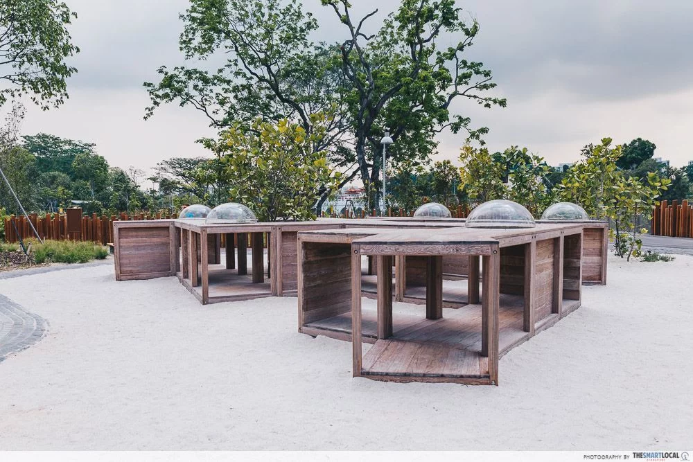

Recently opened on 27th April 2019, the lakeside garden is one of the Jurong Lake gardens that will soon join the Gardens By The Bay and Botanic Gardens as the third national garden in Singapore.
meow meow meow meow.


 
